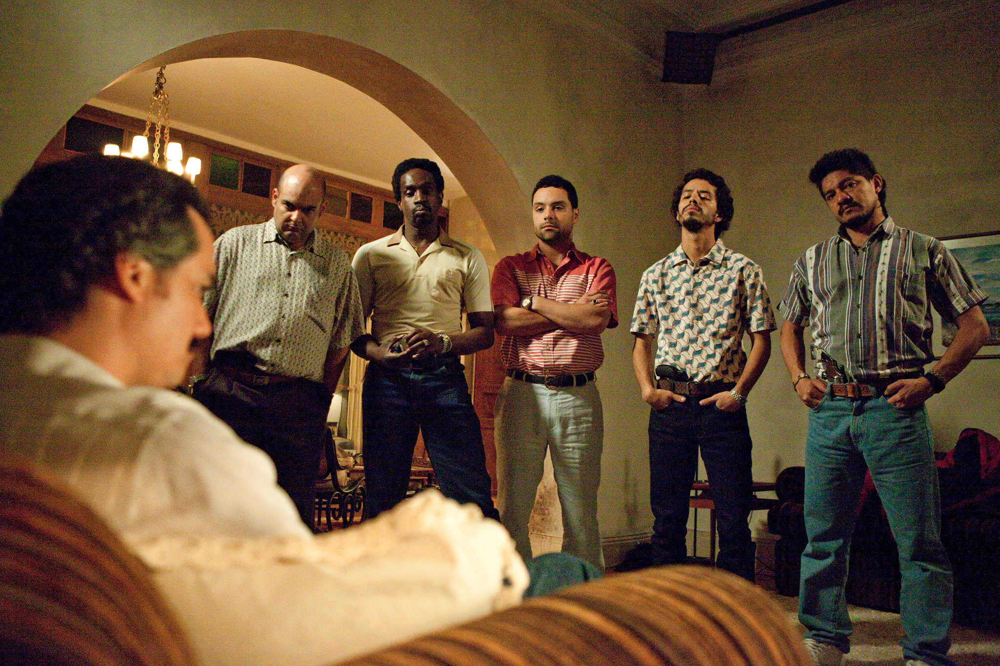

毒梟（英語：Narcos）是一部美國犯罪網路電視劇，由克里斯·布蘭卡托、Carlo Bernard和道格·米羅創作和監製。描述二十世紀八零年代哥倫比亞大毒梟巴勃羅·埃斯科瓦爾如何帶領著麥德林集團一步步成為南美洲的毒品帝國，以及美國緝毒局探員間的故事。第1季共有10集，在2015年8月28日在Netflix上播放，第二季於2016年9月2日播出，共有10集，Netflix在2016年9月6日已經續訂第3、4季。第一季故事開始於1970-1980年代。第一集場景為1989年哥倫比亞、1973年智利，劇情接續1979年開始。2017年9月，Netflix劇組的一名場務人員在墨西哥城被發現於其車中非正常死亡。埃斯科瓦爾集團的話事人羅伯特·埃斯科瓦爾否認一切指控。2018年7月18日，宣布第四季會「重設」為新的Netflix電視劇，名為《毒梟：墨西哥》。新的電視劇安排在2018年11月16日播放，故事會返回1980年代，並且把設定轉移至墨西哥。
故事大綱
埃斯科瓦爾（Wagner Moura 飾）曾是一個走私商人，機緣巧合之下開始接觸毒品生意，野心勃勃的他將無法計數的毒品販賣到美國，成為了富可敵國的大毒梟。與此同時，他集結了圈內幾大巨頭，成立了聲名顯赫的麥德林集團，一時間，埃斯科瓦爾的勁頭無人能敵。墨菲（Boyd Holbrook 飾）是美國緝毒局派往哥倫比亞的警探，他和搭檔潘那（Pedro Pascal 飾）合作，主要負責埃斯科瓦爾的案件。埃斯科瓦爾當上了議員，甚至決心競選總統，卻在國會當眾受辱。之後，哥倫比亞政府試圖啟用引渡法案對付毒梟們，為了對抗政府，埃斯科瓦爾徹底淪為了反社會的恐怖分子，在不斷壯大自己的毒品帝國的同時，用炸彈、暗殺和鮮血提醒著哥倫比亞政府，誰才是真正的老大。
